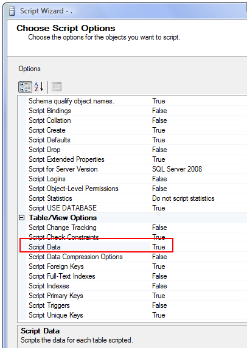
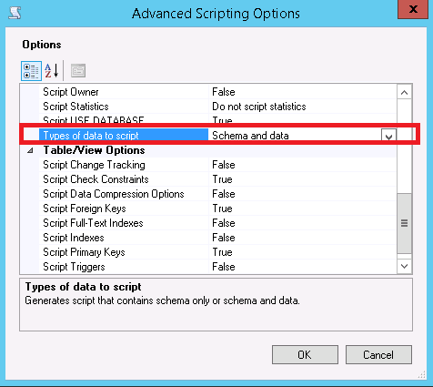
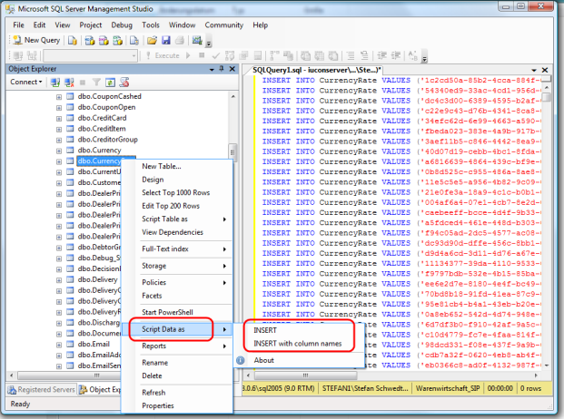
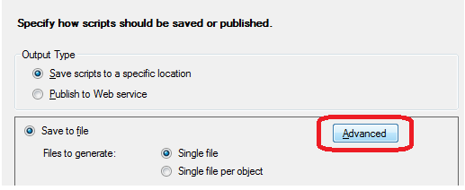

Exporting data In SQL Server as INSERT INTO
I am using SQL Server 2008 Management Studio and have a table I want to migrate to a different db server.
Is there any option to export the data as an insert into SQL script??
Answer
In SSMS in the Object Explorer, right click on the database, right-click and pick "Tasks" and then "Generate Scripts".
This will allow you to generate scripts for a single or all tables, and one of the options is "Script Data". If you set that to TRUE, the wizard will generate a script with INSERT INTO () statement for your data.
If using 2008 R2 or 2012 it is called something else, see screenshot below this one

2008 R2 or later eg 2012
Select "Types of Data to Script" which can be "Data Only", "Schema and Data" or "Schema Only" - the default).

And then there's a "SSMS Addin" Package on Codeplex (including source) which promises pretty much the same functionality and a few more (like quick find etc.)

Suggest
For the sake of over-explicit brainlessness, after following marc_s' instructions to here...
In SSMS in the Object Explorer, right click on the database right-click and pick "Tasks" and then "Generate Scripts".
... I then see a wizard screen with " Introduction, Choose Objects, Set Scripting Options, Summary, and Save or Publish Scripts " with prev, next, finish, cancel buttons at the bottom.
On the Set Scripting Options step , you have to click "Advanced" to get the page with the options. Then, as Ghlouw has mentioned, you now select "Types of data to script" and profit.
